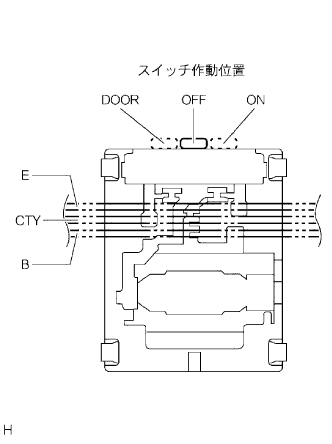

Room lamp ASSY No.1 Single inspection |
| 1. Room lamp ASSY No.1 inspection |
Room lamp switch base conduction inspection
|  |
Use SST (Toyota Electrical Tester) to inspect the conduction between each terminal.
| switching | Terminal name | Conduction |
|---|---|---|
| OFF | - | None |
| Door | B ← → CTY | can be |
| ON | B ← → E | can be |